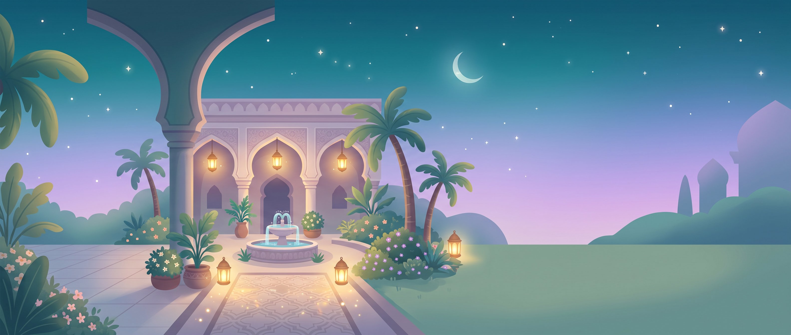

35 د
3,240
واحة القرآن
استمع وردّد واحفظ قصار السور من جزء عمّ
كل السور
جاري الحفظ
مكتملة
١١٢
أكمل من حيث توقفت
سورة الإخلاص
الآية ٣ من ٤ · مرحلة التسميع
أكمل
سور جزء عمّ
الخريطة
كل الأقسام
غرفتي
المتصدرون
 35 د
35 د 3,240
3,240